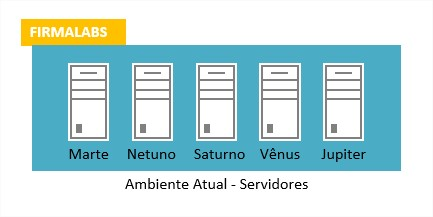
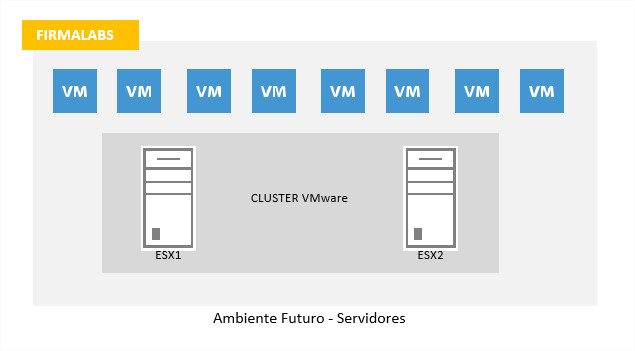
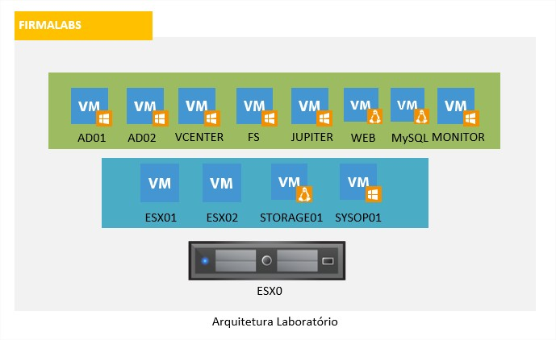

VMware HomeLab - Parte 0 - Introdução e Arquitetura
TutoriaisCompartilhe esse post nas redes sociais...
Olá HomeLabers! Chegou a hora tão esperada. Vou dar início a essa série com o passo a passo para a instalação completa do seu Homelab VMware.
Particularmente gosto de trabalhar com cenários, acredito que dessa maneira, a “aplicabilidade” do LAB fica mais próximo do mundo real.
Com isso, irei descrever o nosso cenário com uma empresa fictícia que deseja fazer um refresh tecnológico e trocar seu parque de servidores antigos por um ambiente totalmente virtual.
Então vamos lá:
Você trabalha no departamento de TI de uma pequena/média empresa chamada FIRMALABS e os seus servidores são antigos e já estão sem garantia e suporte do fabricante. O número de tickets no Helpdesk referentes a lentidão dos sistemas vem aumentando a cada mês e a experiência do usuário está sendo afetada, assim como a credibilidade do departamento de TI. Panes de hardware são frequentes, gerando indisponibilidades dos serviços e impactando no faturamento da empresa. O seu dia-a-dia como SysAdmin consiste em apagar incêndios e manter o ambiente funcionando.
Foi decidido também que a arquitetura de rede atual será mantida e um refresh será em uma segunda fase, no próximo trimestre, portanto, está fora do seu escopo no momento.
O ambiente atual é composto de 5 servidores físicos com as seguintes aplicações/serviços/configuração:
[caption id=“attachment_224” align=“aligncenter” width=“433”] Servidores do ambiente atual[/caption]
* Marte - AD/DNS/DHCP - 2 cores, 4GB RAM, 1 HD 250GB | Windows Server 2003
* Netuno - File Server - 2cores, 4GB RAM, 1 HD 1TB | Windows Server 2003
* Saturno - Servidor Web (LAMP) - 1 core, 2GB RAM, 1 HD 500GB | Linux Ubuntu
* Venus - Servidor Banco de Dados (MySQL) - 2 cores, 2GB RAM, 1 HD 500GB | Linux Ubuntu
* Jupiter - Servidor Aplicação Proprietária e sem suporte - 1 core, 1GB RAM, 1 HD 250GB | Windows 7
Existem também 2 “deskservers” que funcionam como servidor de arquivos e que rodam uma aplicação do departamento financeiro. Esses “deskservers” foram criados pelo departamento financeiro para suprir uma necessidade pontual e estão em “produção” desde então. Foi descoberto no levantamento realizado que a aplicação não é mais utilizada.
O estudo mostrou que na primeira fase do projeto, se faz necessária a aquisição de 2 servidores para o ambiente VMware (especificação abaixo), assim como a aquisição de um NAS com 4TB de espaço util.
Configuração dos servidores: 2x servidores com 1 processador 4 cores, 16GB RAM e 2 placas de rede
Serão adquiridas 2 licenças (1 por processador) do pacote vSphere with Operations Management Standard (versão 5.5) para o ambiente de virtualização. Esse pacote permite habilitar as funções de vMotion, HA (High Availability) e FT (Fault Tolerance)
A arquitetura do ambiente ficará assim:

Premissas:
* O sistema operacional dos servidores Windows será o Windows 2012 R2 64 bits. Serão adquiridas 2 licenças Datacenter (por razões de licenciamento)
* O sistema operacional dos servidores Linux será o Ubuntu Linux Server 14.04.2 LTS 64 bits
* O AD será implantado em Alta Disponibilidade, como 2 maquinas virtuais
* Não haverá migração de usuários do AD antigo para o novo. Será tudo recriado do zero
* Os servidores Marte, Netuno, Saturno e Vênus serão recriados do zero e seus dados migrados para os novos servidores
* O servidor Júpiter será convertido para virtual (P2V) até a descontinuação do serviço - definida para o 4 trimestre 2015
* Os deskservers serão descontinuados. Os arquivos serão transferidos para o File Server e a aplicação descontinuada.
Links para download:
<a href="http://www.microsoft.com/en-us/evalcenter/evaluate-windows-server-2012-r2" target="_blank">Windows Server 2012 R2 Datacenter</a>
<a href="http://www.ubuntu.com/download/server" target="_blank">Ubuntu Server</a>
Nesse cenário, conseguiremos simular uma empresa de verdade em uma escala reduzida.
O hardware mínimo necessário/aconselhavel para você montar o esse cenário é o seguinte:
1 desktop dedicado e um processador compatível com virtualização
8 GB de RAM / 16 ou mais é melhoria
500GB HD (mais melhor)
2 placas de rede
Essa será arquitetura do nosso laboratório com 1 desktop (ou laptop) e instalando os servidores ESXi em modo nested (aninhado). No decorrer da série iremos montar passo-a-passo esse essa arquitetura.

Se você não dispor desse hardware agora (acredito que o único “senão” deve ser a segunda placa de rede) você pode fazer o lab no seu PC ou Notebook, utilizando o VMware Workstation (baixe a versão de avaliação). Nesse caso, garanta que você tenha pelo menos 8GB de memória ram. Outra opção que eu ainda não testei é usar um notebook com Windows 8, habilitar o Hyper-V e instalar o ESXi como uma VM do Hyper-V. Deve funcionar pois eu já vi alguns posts sobre isso, mas ainda não testei (aqui).
A sequência de posts que pretendo seguir é a seguinte:
* [VMware HomeLab - Parte 0 - Introdução e Arquitetura](http://homelaber.com.br/vmware-homelab-parte-0-introducao-e-arquitetura/)
* VMware HomeLab - Parte 1 - Preparativos
* VMware HomeLab - Parte 2 - Instalação VMware ESXi
* VMware HomeLab - Parte 3 - Instalação VMware ESXi Nested
* VMware HomeLab - Parte 4 - Instalação Storage (OpenFiler)
* VMware HomeLab - Parte 5 - Instalação AD/DNS/DHCP (2x)
* VMware HomeLab - Parte 6 - Instalação vCenter Server
* VMware HomeLab - Parte 7 - Configuração vCenter
* VMware HomeLab - Parte 8 - Configuração vMotion
* VMware HomeLab - Parte 9 - Configuração HA
* VMware HomeLab - Parte 10 - Configuração File Server
* VMware HomeLab - Parte 11 - Instalação Servidor LAMP
* VMware HomeLab - Parte 12 - Instalação MySQL
* VMware HomeLab - Parte 13 - P2V servidor Júpiter
* VMware HomeLab - Parte 14 - Instalação Servidor Monitoração
* VMware HomeLab - Parte 15 - Finalização
Essa sequência pode mudar, conforme o andamento do projeto (na vida real é assim) e o feedback de vocês. Quero tentar cobrir alguns pontos do curso de VMware ICM (Install, Configure e Manage) e algumas coisas da vida real, por isso, no começo o ritmo será um pouco mais lento.
Os posts dessa série serão publicados 1x por semana, sempre as segundas-feiras.
Até o próximo post e não se esqueça de deixar o seu comentário no post, seguir o HomeLaber noTwitter (@Homelaber) e curtir a nossa página no Facebook (fb.com/homelaber) para ficar sempre atualizado das novidade do blog.
VC
Compartilhe esse post nas redes sociais...Valdecir Carvalho
Nerd e pai orgulhoso da Mariana e João. Profissional Sênior de TI com foco em arquitetura de infraestrutura e cloud computing. Blogueiro, podcaster, palestrante, amante de comunidades técnicas, fotógrafo aposentado e adora jogos antigos.
#vExpert · #VMUGLeader · #VUGBrasil · #vBronwBagBrasil · #VeeamVanguard